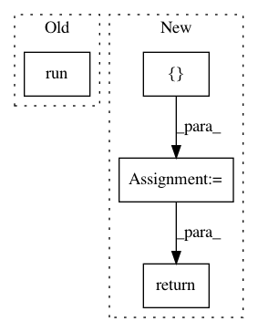

59d84cd18324aa86373091c8a0c262e6536d32fe,src/detection/tensor/detector.py,Detector,detect,#Detector#,29
Before Change
with tf.Session(graph=imported_graph) as sess:
with tf.device("/gpu:0"):
softmax_tensor = sess.graph.get_tensor_by_name("final_result:0")
predictions = sess.run(softmax_tensor, {"DecodeJpeg:0": image_array})
predictions = np.squeeze(predictions)
answer = {}
for node_id in range(len(predictions)):
answer[self.labels[node_id]] = predictions[node_id]
After Change
threads = [pool.apply_async(self.operation,
args=(sess, softmax_tensor, np_images[image_number], image_number,)) for
image_number in range(len(np_images))]
answers = []
for thread in threads:
prediction, image_number = thread.get()
prediction = np.squeeze(prediction)
answer = {"image_number": image_number}
for node_id in range(len(prediction)):
answer[self.labels[node_id]] = prediction[node_id]
answers.append(answer)
return answers
@staticmethod
def _pil_to_np(image):
return np.array(image)[:, :, 0:3]
In pattern: SUPERPATTERN
Frequency: 3
Non-data size: 4
Instances
Project Name: geometalab/OSMDeepOD
Commit Name: 59d84cd18324aa86373091c8a0c262e6536d32fe
Time: 2016-08-12
Author: samuel.kurath@gmail.com
File Name: src/detection/tensor/detector.py
Class Name: Detector
Method Name: detect
Project Name: nilmtk/nilmtk
Commit Name: a583300c421eb31041883e2775280810f1e853ba
Time: 2014-11-25
Author: jack-list@xlk.org.uk
File Name: nilmtk/elecmeter.py
Class Name: ElecMeter
Method Name: good_sections
Project Name: nilmtk/nilmtk
Commit Name: 727196fda06a4c79354ad7f181c279ef78022e55
Time: 2014-11-25
Author: jack-list@xlk.org.uk
File Name: nilmtk/elecmeter.py
Class Name: ElecMeter
Method Name: dropout_rate